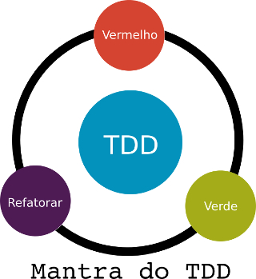
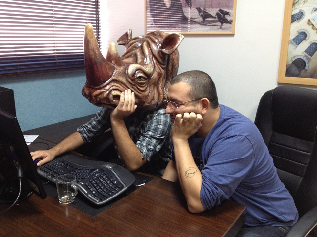
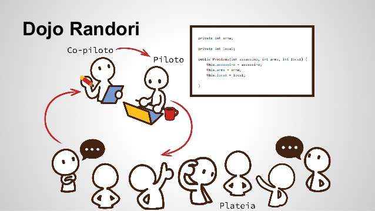
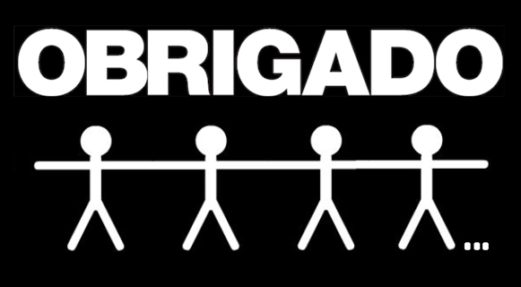

A palavra DOJO, em uma tradução literal do japonês, significa "lugar do caminho" e é originalmente usada para designar um espaço de meditação dos monges budistas. Em uma tradução livre dojo significa "lugar onde se estuda a vida", mas hoje em dia o termo é mais conhecido como lugar onde se pratica artes marciais em uma sala dentro de uma academia com o chão coberto de tapetes.
DOJO que parada é essa!?
O Coding Dojo ou Dojo de Programação é uma atividade que vem sendo muito utilizada pela comunidade de desenvolvedores e pessoas interessadas com o objetivo de melhorarem suas habilidades de escrita de algoritmos eficientes e de qualidade. A fundamentação do dojo está na prática de métodos ágeis de desenvolvimento oriundas do Extreme Programming (XP) como o TDD (Test Driven Development, "Programação Orienta a Testes"), Pair Programming (Programação em Pares) e o Baby Steps praticados em um ambiente inclusivo, seguro e convidativo.
Justificativa
Alguns programadores não têm o costume de praticar suas "skills" de programação e com isso aprimorarem a sua capacidade de resolver problemas.
Assim como jogadores de futebol que treinam exaustivamente e aprendem técnicas continuamente para irem bem em um jogo, programadores também precisam treinar para estarem preparados para os desafios da profissão.
Como funciona o Coding Dojo?
O dojo não é um local para exibicionismo ou competição. O principal objetivo do Coding Dojo é a prática e troca de conhecimento entre os participantes em qualquer nível de conhecimento. Acontece muito de um programador ter bom conhecimento de uma linguagem e um conhecimento deficiente de outra, por isso é proposto a realização do Dojo, para ensinar através do compartilhamento de ideias e conhecimentos.
Metodologias
-
TDD: O TDD é um acróstico em inglês de Test Driven Development, traduzindo Desenvolvimento Dirigido a Testes. TDD é uma técnica (englobada pelo XP) que contempla o desenvolvimento a partir de testes. Duas regras básicas devem ser seguidas, primeiro deve-se escrever um teste automatizado que falhe antes de escrever algum código e a outra regra diz que se deve remover código duplicado. Essas regras geram o simbolismo do TDD que possui três termos, Vermelho, Verde e Refatoração, chamado de mantra do TDD. O significado é o seguinte: vermelho – escreva um pequeno teste que falhe, verde – faça o teste funcionar rapidamente cometendo qualquer pecado necessário nesse processo e refatoração – remova a duplicação criada para fazer o teste passar. As vantagens de usar esse método são feedback constante da situação do código, confiança para mudar pois as funcionalidades prontas possuem testes, caso uma alteração afete algo pronto, quando os testes estiverem passando não há necessidade de continuar desenvolvendo.

-
Pair Programming: O Pair Programming (Programação em Pares) é uma técnica caraterizada por uma dupla sentada lado a lado compartilhando o mesmo computador e desenvolvendo a solução colaborativamente. Essa técnica permite que os programadores mantenham a atenção de um e do outro na tarefa, refinem as ideias do sistema, esclarecimento das ideias, quando alguém não consegue seguir em frente o outro toma iniciativa e ambos se mantem alinhados com as práticas do time.

-
Baby Steps: É basicamente a mesma ideia de quando uma criança está aprendendo dar os seu primeiros passos, deve-se deixar que a pessoa se arrisque alguns passos sozinhos mas sempre supervisionando e dando dicas de como dar o próximo passo.
-
Kata: Em artes marciais, Kata é como chamamos a sequência de movimentos em uma simulação de luta. Analogamente no Coding Dojo, o Kata é representado pela dupla de programadores que são denominados "piloto" e "copiloto".
-
Piloto: Pessoa responsável pela codificação da solução do problema.
-
Copiloto: O copiloto é responsável por passar as instruções ao piloto.
-
Randori: Então entramos com a ideia do Randori (das artes marciais é conhecido como o momento da troca e rodizio dos oponentes). A cada 5 ou 10 minutos o Copiloto torna-se Piloto, o Piloto volta para a plateia e um novo Copiloto é escolhido entre os que ainda não participaram do Kata!

Todas essas práticas oriundas do Extreme Programming, têm como objetivo melhorar o Workflow do desenvolvimento de projetos de software, além de serem práticas que ajudam a desenvolver a capacidade de trabalhar em equipe.
Requisitos para organizar um Dojo
Para Organizar um Dojo basta ter pessoas interessadas, um computador pessoal, um data show e uma sala reservada para a realização do evento. Simples, não?! Pois acredite, realmente é simples. Então, se não existe um Dojo na sua região junte uma galera animada e descubra o prazer a aprender ou melhorar as suas habilidades de programação junto com seus amigos =).
Feedback
No final do Dojo temos o momento do Feedback, que é onde iremos anotar todos os pontos positivos e negativos em relação ao evento que ocorreu para que sejam analisados pela organização do Dojo!
E quem sabe, no final do Dojo...
No final do Dojo os participantes podem combinar (se quiserem) de fazer uma vaquinha para comprar algum lanche, como pizza, x-burguers, ou qualquer coisa que sugerirem para terminar melhor o evento =D
Agradecimento

Gostaria de agradecer publicamente a ajuda na execução desse projeto:
- Primeiramente você : Por estar interessado na nossa ideia =)
- Coordenação do Curso de Ciência da Computação UFT : Por nos receberem de braços abertos e apoiando a execução do projeto
- Anna Paula de Sousa Parente Rodrigues : Por estar nos coordenando e ajudando na execução do Dojo dando dicas e correndo atrás de tornar esse sonho em realidade
- CACCOMP-UFT : Por tudo que vem feito pelo curso sempre em busca da integração de todos os alunos do curso e também de outras universidades e campus
- Fabio C. Barrionuevo da Luz: por toda a parceira a frente do projeto Coding Dojo TO
- Elvis Ribeiro Ferraz: pela criação do logotipo, banners e arte visual em geral
- Luana Souza Galvão: pela sua ajuda na revisão do texto
Referências
LUZ, Ramiro Batista; NETO, Adolfo. Usando Dojos de Programação para o Ensino de Desenvolvimento Dirigido por Testes. Número da Edição. Local : Editora, ano.
ANDRADE, Bruno Eustáquio et al. TDD - Test Driven Development (Desenvolvimento guiado por testes). Artigo Acadêmico.Número da Edição. Local : Editora, ano.
BONFIM, Márcio. O que é o Coding Dojo. Devmedia. Disponível em: http://www.devmedia.com.br/o-que-e-o-coding-dojo/30517. Acesso em: 20, mar. 2015.
ANICHE, Maurício. Test-driven-development. Caelum. Disponível em: http://tdd.caelum.com.br/. Acesso em: 20, mar. 20015.

"Afinal de contas o que é o Coding Dojo?" de "Vinícius Aires Barros" está licenciado com uma Licença Creative Commons - Atribuição-NãoComercial-SemDerivações 4.0 Internacional.
comments powered by Disqus